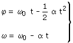
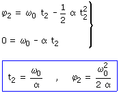
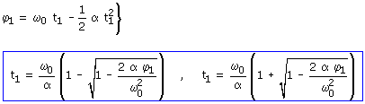
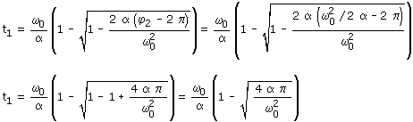
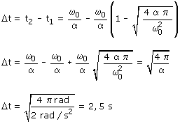

Ecuaciones del movimiento:
 |
 |
Parámetros: ω0 = 90 r.p.m = 3π rad/s α = 2 rad/s2 |
Para empezar calculamos las vueltas que da hasta detenerse y el tiempo que tarda en hacerlo
Aplicación: Se ha parado
Datos: ω2 = 0, Incógnitas: t2, φ2

Calculamos el tiempo que tarda en dar una vuelta menos de las que da hasta pararse
Aplicación: Le falta una vuelta para pararse
Datos: ω1 = ω2 - 2π, Incógnitas: t1

Para saber cuál de las dos soluciones es la que vale tendríamos que calcular la velocidad correspondiente a cada tiempo y tomar el que hace que el sentido de la velocidad sea contrario al de las agujas del reloj
Hay otra forma de verlo: sabemos que se detiene en el instante t = ω0/α y el tiempo que buscamos tiene que ser anterior por tanto habrá que tomar la raíz negativa (¿Lo ves?)

Entonces el intervalo de tiempo transcurrido será:

Debido a la simetría de los movimientos uniformemente acelerados, el tiempo que se tarda en dar la última vuelta frenando con aceleración α es el mismo que se tardaría en dar la primera vuelta partiendo del reposo con la misma aceleración α ¡Atrévete a comprobarlo!